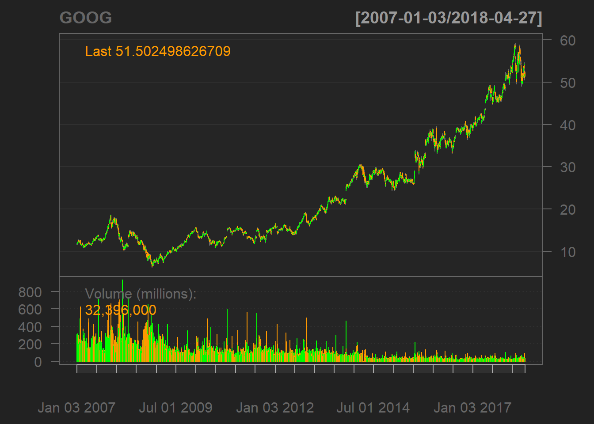
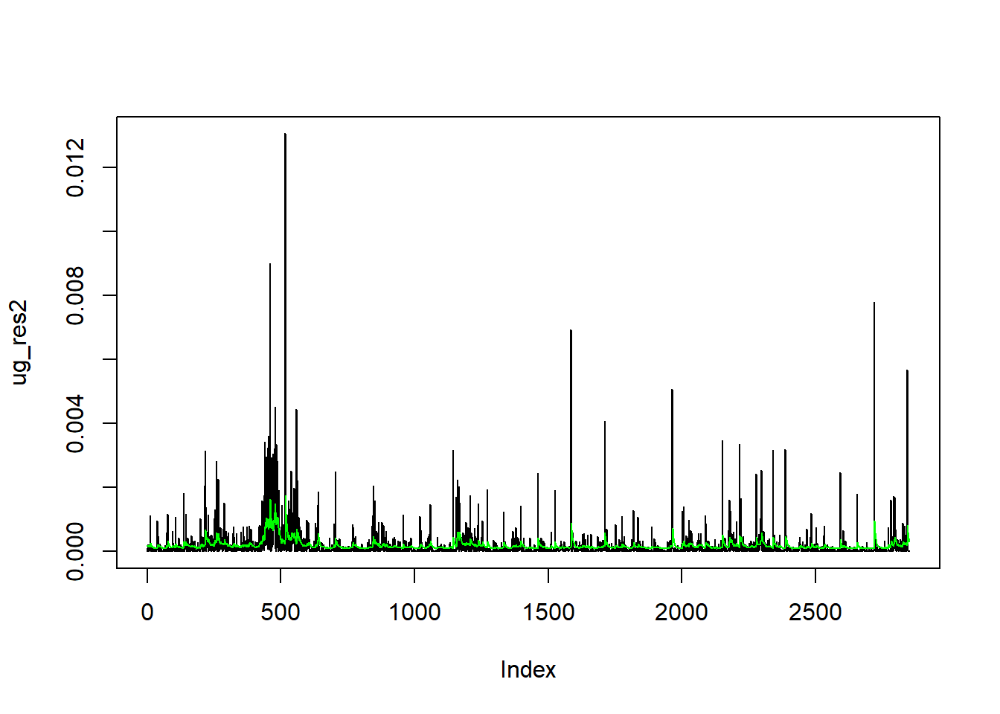
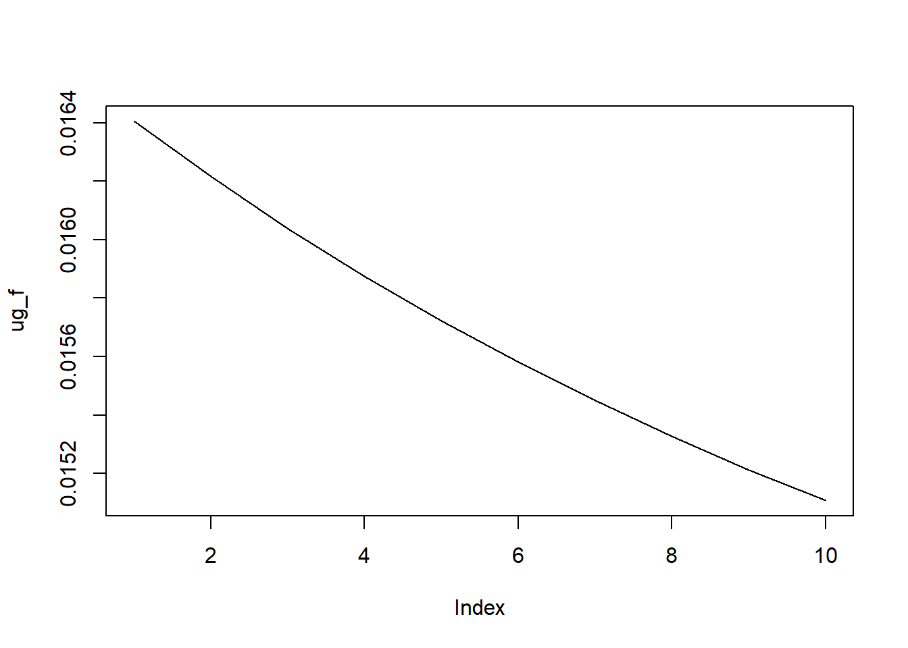
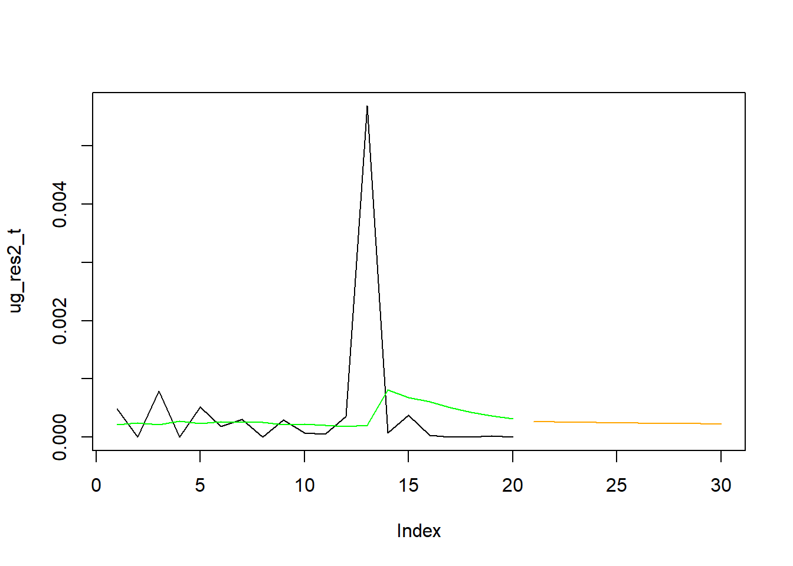
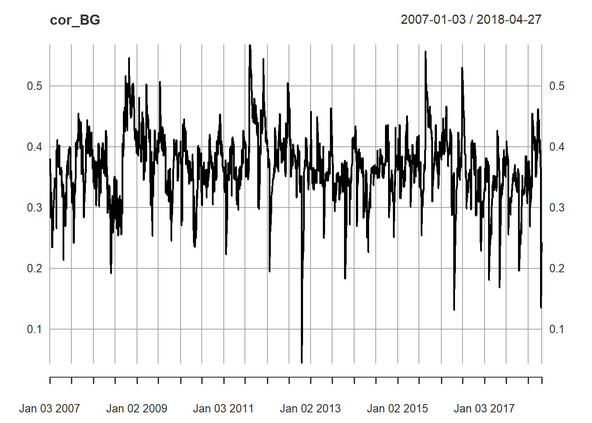
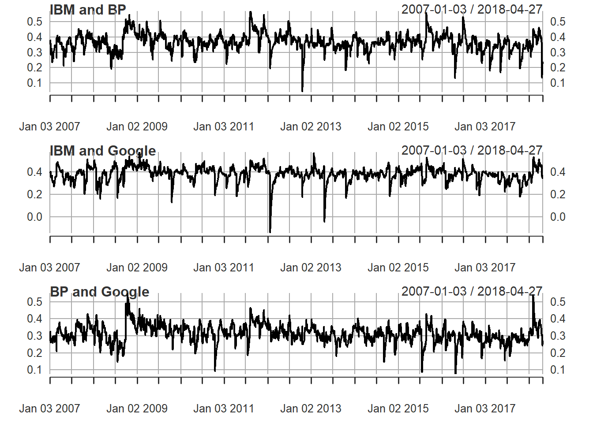
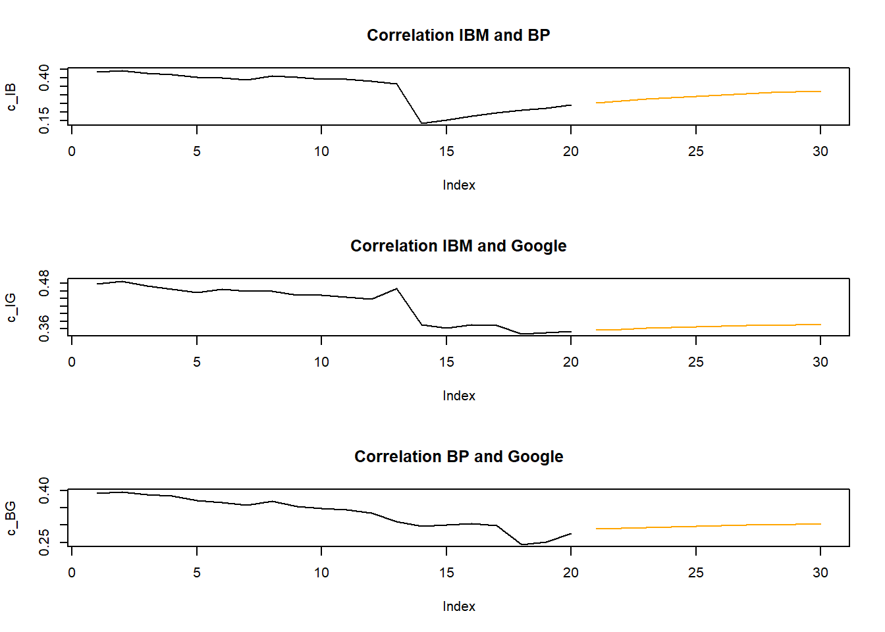

When you are dealing with financial time-series we often have relatively high frequency observations available. It is very common for instance to have daily observations available. In fact it is now possible to obtain hourly, minute, second or even millisecond observations. But here we will restrict ourselves to daily observations. For some assets these will be 7 days a week observations, but for others these will be work-day observations, so typically 5 days a week of observations.
There are a number of packages that can enable us to estimate
volatility models. The packages we will use are the rugarch
for univariate GARCH models and the rmgarch (for
multivariate models) package both written by Alexios Ghalanos. We shall
also use the quantmod package as it will give us some easy
access to some standard financial data.
So please ensure that you install these packes and then load them,
#install.packages(c("quantmod","rugarch","rmgarch")) # only needed in case you have not yet installed these packages
library(quantmod)
library(rugarch)
library(rmgarch)Next we set our working directory
# replace with your directory and uncomment
# setwd("YOUR/COPLETE/DIRECTORY/PATH") Here we will use a convenient data retrieval function
(getSymbols) delivered by the quantmod package
in order to retrieve some data. This function works, for instance, to
retrieve stock data. The default source is Yahoo Finance. If you want to find
out what stock has which symbol you should be able to search the
internet to find a list of ticker symbols. The following shows how to
use the function. But note that my experience is that sometimes the
connection does not work and you may get an error message. In that case
just retry a few seconds later and it may well work.
startDate = as.Date("2007-01-03") #Specify period of time we are interested in
endDate = as.Date("2018-04-30")
getSymbols("^GSPC", from = startDate, to = endDate)## [1] "GSPC"getSymbols("IBM", from = startDate, to = endDate)## [1] "IBM"getSymbols("GOOG", from = startDate, to = endDate)## [1] "GOOG"getSymbols("BP", from = startDate, to = endDate)## [1] "BP"In your environment you can see that each of these commands loads an object with the respective ticker symbol name. Let’s have a look at one of these dataframes to understand what data these are:
head(IBM)## IBM.Open IBM.High IBM.Low IBM.Close IBM.Volume IBM.Adjusted
## 2007-01-03 93 94 92 93 9619853 53
## 2007-01-04 93 94 93 94 11008627 53
## 2007-01-05 93 94 93 93 7553480 53
## 2007-01-08 94 95 94 95 10815640 53
## 2007-01-09 95 96 95 96 11619177 54
## 2007-01-10 94 95 94 95 9147061 53str(IBM)## An xts object on 2007-01-03 / 2018-04-27 containing:
## Data: double [2850, 6]
## Columns: IBM.Open, IBM.High, IBM.Low, IBM.Close, IBM.Volume ... with 1 more column
## Index: Date [2850] (TZ: "UTC")
## xts Attributes:
## $ src : chr "yahoo"
## $ updated: POSIXct[1:1], format: "2024-10-07 09:59:45"You can see that this object contains a range of daily observations
(Open, High, Close,
Volume and Adjusted share price). We also
learn that the object is formatted as an xts object.
xts is a type of time-series format and indeed we learn
that the data range from 2007-01-03 to 2018-04-30.
You can in fact produce a somewhat fancy looking chart with the
following command (also part of the quantmod package)
chartSeries(GOOG)
When we are estimating volatility models we work with returns. There is a function that transforms the data to returns.
rIBM <- dailyReturn(IBM)
rBP <- dailyReturn(BP)
rGOOG <- dailyReturn(GOOG)
# We put all data into a data frame for use in the multivariate model
rX <- data.frame(rIBM, rBP, rGOOG)
names(rX)[1] <- "rIBM"
names(rX)[2] <- "rBP"
names(rX)[3] <- "rGOOG"There is also a weeklyReturn function in case that is
what you are interested in.
Here we are using the functionality provided by the
rugarch package written by Alexios Galanos.
The first thing you need to do is to ensure you know what type of
GARCH model you want to estimate and then let R know about this. It is
the ugarchspec( ) function which is used to let R know
about the model type. There is in fact a default specification and the
way to invoke this is as follows
ug_spec = ugarchspec()ug_spec is now a list which contains all the relevant
model specifications. Let’s look at them:
ug_spec##
## *---------------------------------*
## * GARCH Model Spec *
## *---------------------------------*
##
## Conditional Variance Dynamics
## ------------------------------------
## GARCH Model : sGARCH(1,1)
## Variance Targeting : FALSE
##
## Conditional Mean Dynamics
## ------------------------------------
## Mean Model : ARFIMA(1,0,1)
## Include Mean : TRUE
## GARCH-in-Mean : FALSE
##
## Conditional Distribution
## ------------------------------------
## Distribution : norm
## Includes Skew : FALSE
## Includes Shape : FALSE
## Includes Lambda : FALSEThe key issues here are the spec for the Mean Model
(here an ARMA(1,1) model) and the specification for the
GARCH Model, here an sGARCH(1,1) which is
basically a GARCH(1,1). To get details on all the possible
specifications and how to change them it is best to consult the documentation
of the rugarch package.
Let’s say you want to change the mean model from an ARMA(1,1) to an ARMA(1,0), i.e. an AR(1) model.
ug_spec <- ugarchspec(mean.model=list(armaOrder=c(1,0)))You could call ug_spec again to check that the model
specification has actually changed.
The following is the specification for an # an example of the EWMA Model (although we will not use it below).
ewma_spec = ugarchspec(variance.model=list(model="iGARCH", garchOrder=c(1,1)),
mean.model=list(armaOrder=c(0,0), include.mean=TRUE),
distribution.model="norm", fixed.pars=list(omega=0))Now that we have specified a model to estimate we need to find the
best arameters, i.e. we need to estimate the model. This step is
achieved by the ugarchfit function.
ugfit = ugarchfit(spec = ug_spec, data = rIBM)ugfit is now a list that contains a range of results
from the estimation. Let’s have a look at the results
ugfit##
## *---------------------------------*
## * GARCH Model Fit *
## *---------------------------------*
##
## Conditional Variance Dynamics
## -----------------------------------
## GARCH Model : sGARCH(1,1)
## Mean Model : ARFIMA(1,0,0)
## Distribution : norm
##
## Optimal Parameters
## ------------------------------------
## Estimate Std. Error t value Pr(>|t|)
## mu 0.000342 0.000220 1.55696 0.11948
## ar1 -0.013579 0.021424 -0.63383 0.52619
## omega 0.000015 0.000002 6.91601 0.00000
## alpha1 0.111085 0.005441 20.41613 0.00000
## beta1 0.809643 0.004053 199.74146 0.00000
##
## Robust Standard Errors:
## Estimate Std. Error t value Pr(>|t|)
## mu 0.000342 0.000229 1.49327 0.135367
## ar1 -0.013579 0.019591 -0.69314 0.488222
## omega 0.000015 0.000011 1.38185 0.167018
## alpha1 0.111085 0.049762 2.23232 0.025594
## beta1 0.809643 0.076640 10.56424 0.000000
##
## LogLikelihood : 8365
##
## Information Criteria
## ------------------------------------
##
## Akaike -5.8665
## Bayes -5.8560
## Shibata -5.8665
## Hannan-Quinn -5.8627
##
## Weighted Ljung-Box Test on Standardized Residuals
## ------------------------------------
## statistic p-value
## Lag[1] 0.03288 0.8561
## Lag[2*(p+q)+(p+q)-1][2] 0.03297 1.0000
## Lag[4*(p+q)+(p+q)-1][5] 1.39445 0.8716
## d.o.f=1
## H0 : No serial correlation
##
## Weighted Ljung-Box Test on Standardized Squared Residuals
## ------------------------------------
## statistic p-value
## Lag[1] 0.2501 0.6170
## Lag[2*(p+q)+(p+q)-1][5] 1.2785 0.7941
## Lag[4*(p+q)+(p+q)-1][9] 1.9510 0.9108
## d.o.f=2
##
## Weighted ARCH LM Tests
## ------------------------------------
## Statistic Shape Scale P-Value
## ARCH Lag[3] 1.295 0.500 2.000 0.2552
## ARCH Lag[5] 1.603 1.440 1.667 0.5656
## ARCH Lag[7] 1.935 2.315 1.543 0.7312
##
## Nyblom stability test
## ------------------------------------
## Joint Statistic: 27
## Individual Statistics:
## mu 0.42590
## ar1 0.06676
## omega 0.89962
## alpha1 0.55323
## beta1 0.15390
##
## Asymptotic Critical Values (10% 5% 1%)
## Joint Statistic: 1.3 1.5 1.9
## Individual Statistic: 0.35 0.47 0.75
##
## Sign Bias Test
## ------------------------------------
## t-value prob sig
## Sign Bias 0.2136 0.8309
## Negative Sign Bias 1.0140 0.3107
## Positive Sign Bias 0.4426 0.6581
## Joint Effect 1.6915 0.6388
##
##
## Adjusted Pearson Goodness-of-Fit Test:
## ------------------------------------
## group statistic p-value(g-1)
## 1 20 134.9 1.705e-19
## 2 30 139.3 2.301e-16
## 3 40 160.1 1.304e-16
## 4 50 166.0 1.240e-14
##
##
## Elapsed time : 0.33If you are familiar with GARCH models you will recognise some of the
parameters. ar1 is the AR1 coefficient of the mean model
(here very small and basically insignificant), alpha1 is
the coefficient to the squared residuals in the GARCH equation and
beta1 is the coefficient to the lagged variance.
Often you will want to use model output for some further analysis. It
is therefore important to understand how to extract information such as
the parameter estimates, their standard errors or the residuals. The
object ugfit contains all the information. In that object
you can find two drawers (or in technical speak slots, @fit and @model).
Each of these drawers contains a range of different things. What they
contain you can figure out by asking for the element names
paste("Elements in the @model slot")## [1] "Elements in the @model slot"names(ugfit@model)## [1] "modelinc" "modeldesc" "modeldata" "pars" "start.pars"
## [6] "fixed.pars" "maxOrder" "pos.matrix" "fmodel" "pidx"
## [11] "n.start"paste("Elements in the @fit slot")## [1] "Elements in the @fit slot"names(ugfit@fit)## [1] "hessian" "cvar" "var" "sigma"
## [5] "condH" "z" "LLH" "log.likelihoods"
## [9] "residuals" "coef" "robust.cvar" "A"
## [13] "B" "scores" "se.coef" "tval"
## [17] "matcoef" "robust.se.coef" "robust.tval" "robust.matcoef"
## [21] "fitted.values" "convergence" "kappa" "persistence"
## [25] "timer" "ipars" "solver"If you wanted to extract the estimated coefficients you would do that in the following way:
ugfit@fit$coef## mu ar1 omega alpha1 beta1
## 0.000342 -0.013579 0.000015 0.111085 0.809643ug_var <- ugfit@fit$var # save the estimated conditional variances
ug_res2 <- (ugfit@fit$residuals)^2 # save the estimated squared residualsLet’s plot the squared residuals and the estimated conditional variance:
plot(ug_res2, type = "l")
lines(ug_var, col = "green")
Often you will want to use an estimated model to subsequently
forecast the conditional variance. The function used for this purpose is
the ugarchforecast function. The application is rather
straightforward:
ugfore <- ugarchforecast(ugfit, n.ahead = 10)
ugfore##
## *------------------------------------*
## * GARCH Model Forecast *
## *------------------------------------*
## Model: sGARCH
## Horizon: 10
## Roll Steps: 0
## Out of Sample: 0
##
## 0-roll forecast [T0=2018-04-27]:
## Series Sigma
## T+1 0.0003689 0.01640
## T+2 0.0003416 0.01622
## T+3 0.0003420 0.01604
## T+4 0.0003420 0.01587
## T+5 0.0003420 0.01572
## T+6 0.0003420 0.01558
## T+7 0.0003420 0.01545
## T+8 0.0003420 0.01533
## T+9 0.0003420 0.01521
## T+10 0.0003420 0.01511As you can see we have produced forecasts for the next ten days, both
for the expected returns (Series) and for the conditional
volatility (square root of the conditional variance). Similar to the
object created for model fitting, ugfore contains two slots
(@model and @forecast) and you can use
names(ugfore@forecast) to figure out under which names the
elements are saved. For instance you can extract the conditional
volatility forecast as follows:
ug_f <- ugfore@forecast$sigmaFor
plot(ug_f, type = "l")
Note that the volatility is the square root of the conditional variance.
To put these forecasts into context let’s display them together with the last 50 observations used in the estimation.
ug_var_t <- c(tail(ug_var,20),rep(NA,10)) # gets the last 20 observations
ug_res2_t <- c(tail(ug_res2,20),rep(NA,10)) # gets the last 20 observations
ug_f <- c(rep(NA,20),(ug_f)^2)
plot(ug_res2_t, type = "l")
lines(ug_f, col = "orange")
lines(ug_var_t, col = "green")
You can see how the forecast of the conditional variance picks up from the last estimated conditional variance. In fact it decreases from there, slowly, towards the unconditional variance value.
The rugarch package has a lot of additional
functionality which you can explore through the documentation.
Often you will want to model the volatility of a vector of assets. This can be done with the multivariate equivalent of the univariate GARCH model. Estimating multivariate GARCH models turns out to be significantly more difficult than univariate GARCH models, but fortunately procedures have been developed that deal with most of these issues.
Here we are using the rmgarch package which has a lot of
useful functionality. We are applying it to estimate a multivariate
volatility model for the returns of BP, Google/Alphabet and IBM
shares.
As for the rugarch package we first need to specify the
model we want to estimate. Here we stick with a Dynamic Conditional
Correlation (DCC) model (see the documentation
for details.). When estimating DCC models one basically estimates
individual GARCH-type models (which could differ for each individual
asset). These are then used to standardise the individual residuals. As
a second step one then has to specify the correlation dynamics of these
standardised residuals. It is possible to estimate the parameters of the
univariate and the correlation model in one big swoop. however, my
experience with this, and other packages, is that it is beneficial to
separate the two steps.
Here we assume that we are using the same univariate volatility model specification for each of the three assets.
# DCC (MVN)
uspec.n = multispec(replicate(3, ugarchspec(mean.model = list(armaOrder = c(1,0)))))What does this command do? You will recognise that
ugarchspec(mean.model = list(armaOrder = c(1,0))) specifies
an AR(1)-GARCH(1,1) model. By using
replicate(3, ugarchspec...) we replicate this model 3 times
(as we have three assets, IBM, Google/Alphabet and BP).
We now estimate these univariate GARCH models using the
multifit command.
multf = multifit(uspec.n, rX)The results are saved in multf and you can type
multf into the command window to see the estimated
parameters for these three models. But we will here proceed to specify
the DCC model (I assume that you know what a DCC model is. This is not
the place to elaborate on this and many textbooks or indeed the documentation
to this package provide details). To specify the correlation
specification we use the dccspec function.
spec1 = dccspec(uspec = uspec.n, dccOrder = c(1, 1), distribution = 'mvnorm')In this specification we have to state how the univariate
volatilities are modeled (as per uspec.n) and how complex
the dynamic structure of the correlation matrix is (here we are using
the most standard dccOrder = c(1, 1) specification).
Now we are in a position to estimate the model using the
dccfit function.
fit1 = dccfit(spec1, data = rX, fit.control = list(eval.se = TRUE), fit = multf)We want to estimate the model as specified in spec1,
using the data in rX. The option
fit.control = list(eval.se = TRUE) ensures that the
estimation procedure produces standard errors for estimated parameters.
Importantly fit = multf indicates that we ought to use the
already estimated univariate models as they were saved in
multf. The way to learn how to use these functions is by a
combination of looking at the functions’s help (?dccfit)
and googling.
When you estimate a multivariate volatility model like the DCC model you are typically interested in the estimated covariance or correlation matrices. After all it is at the core of these models that you allow for time-variation in the correlation between the assets (there are also constant correlation models, but we do not discuss this here). Therefore we will now learn how we extract these.
# Get the model based time varying covariance (arrays) and correlation matrices
cov1 = rcov(fit1) # extracts the covariance matrix
cor1 = rcor(fit1) # extracts the correlation matrixTo understand the object we have at our hands here we can have a look at the imension:
dim(cor1)## [1] 3 3 2850We get three outputs which tells us that we have a three dimensional
object. The firts two dimensions have 3 elements each (think a \(3\times3\) correlation matrix) and then
there is a third dimension with 2850 elements. This tells us that
cor1 stores 2850 (\(3\times3\)) sorrelation matrices, one for
each day of data.
Let’s have a look at the correlation matrix for the last day, day 2850;
cor1[,,dim(cor1)[3]]## rIBM rBP rGOOG
## rIBM 1.00 0.24 0.35
## rBP 0.24 1.00 0.28
## rGOOG 0.35 0.28 1.00So let’s say we want to plot the time-varying correlation between
Google and BP, which is 0.28 on that last day. In our matrix with
returns rX BP is the second asset and Google the 3rd. So in
any particular correlation matrix we want the element in row 2 and
column 3.
cor_BG <- cor1[2,1,] # leaving the last dimension empty implies that we want all elements
cor_BG <- as.xts(cor_BG) # imposes the xts time series format - useful for plottingAnd now we plot this.
plot(cor_BG)
If you transformed cor_BG to be a xts
series the plot function automatically picks up the date
information. As you can see there is significant variation through time
with the correaltion typically varying between 0.2 and 0.5.
Let’s plot all three correlations between the three assets.
par(mfrow=c(3,1)) # this creates a frame with 3 windows to be filled by plots
plot(as.xts(cor1[1,2,]),main="IBM and BP")
plot(as.xts(cor1[1,3,]),main="IBM and Google")
plot(as.xts(cor1[2,3,]),main="BP and Google")
Often you will want to use your estimated model to produce forecasts for the covariance or correlation matrix
dccf1 <- dccforecast(fit1, n.ahead = 10)
dccf1##
## *---------------------------------*
## * DCC GARCH Forecast *
## *---------------------------------*
##
## Distribution : mvnorm
## Model : DCC(1,1)
## Horizon : 10
## Roll Steps : 0
## -----------------------------------
##
## 0-roll forecast:
##
## First 2 Correlation Forecasts
## , , 1
##
## [,1] [,2] [,3]
## [1,] 1.0000 0.2540 0.3562
## [2,] 0.2540 1.0000 0.2884
## [3,] 0.3562 0.2884 1.0000
##
## , , 2
##
## [,1] [,2] [,3]
## [1,] 1.0000 0.2659 0.3587
## [2,] 0.2659 1.0000 0.2909
## [3,] 0.3587 0.2909 1.0000
##
## . . .
## . . .
##
## Last 2 Correlation Forecasts
## , , 1
##
## [,1] [,2] [,3]
## [1,] 1.0000 0.3203 0.3703
## [2,] 0.3203 1.0000 0.3027
## [3,] 0.3703 0.3027 1.0000
##
## , , 2
##
## [,1] [,2] [,3]
## [1,] 1.0000 0.3251 0.3713
## [2,] 0.3251 1.0000 0.3038
## [3,] 0.3713 0.3038 1.0000The actual forecasts for the correlation can be addresse via
Rf <- dccf1@mforecast$R # use H for the covariance forecastWhen checking the structure of Rf
str(Rf)## List of 1
## $ : num [1:3, 1:3, 1:10] 1 0.254 0.356 0.254 1 ...you realise that the object Rf is a list with one
element. It turns out that this one list item is then a 3 dimensional
matrix/array which contains the the 10 forecasts of \(3 \times 3\) correlation matrices. If we
want to extract, say, the 10 forecasts for the correlation between IBM
(1st asset) and BP (2nd asset), we have to do this in the following
way:
corf_IB <- Rf[[1]][1,2,] # Correlation forecasts between IBM and BP
corf_IG <- Rf[[1]][1,3,] # Correlation forecasts between IBM and Google
corf_BG <- Rf[[1]][2,3,] # Correlation forecasts between BP and Google[[1]] tells R to go to the first (and here only) list
item and then [1,2,] instructs R to select the (1,2)
element of all available correlation matrices.
As for the univariate volatililty model let us display the forecast along with the last in-sample estimates of correlation.
par(mfrow=c(3,1)) # this creates a frame with 3 windows to be filled by plots
c_IB <- c(tail(cor1[1,2,],20),rep(NA,10)) # gets the last 20 correlation observations
cf_IB <- c(rep(NA,20),corf_IB) # gets the 10 forecasts
plot(c_IB,type = "l",main="Correlation IBM and BP")
lines(cf_IB,type = "l", col = "orange")
c_IG <- c(tail(cor1[1,3,],20),rep(NA,10)) # gets the last 20 correlation observations
cf_IG <- c(rep(NA,20),corf_IG) # gets the 10 forecasts
plot(c_IG,type = "l",main="Correlation IBM and Google")
lines(cf_IG,type = "l", col = "orange")
c_BG <- c(tail(cor1[2,3,],20),rep(NA,10)) # gets the last 20 correlation observations
cf_BG <- c(rep(NA,20),corf_BG) # gets the 10 forecasts
plot(c_BG,type = "l",main="Correlation BP and Google")
lines(cf_BG,type = "l", col = "orange")
If you are looking at using pseudo-out-of sample forecasting
(i.e. pretend to forecast values that actually have already occured) you
should explore the out.sample option of the
dccfit function.
The rmgarch package also allows you to estimate
multivariate factor GARCH models and copula GARCH models (check the documentation
for more details.
An alternative package with a slightly different set of multivariate
volatility models is the ccgarch package.